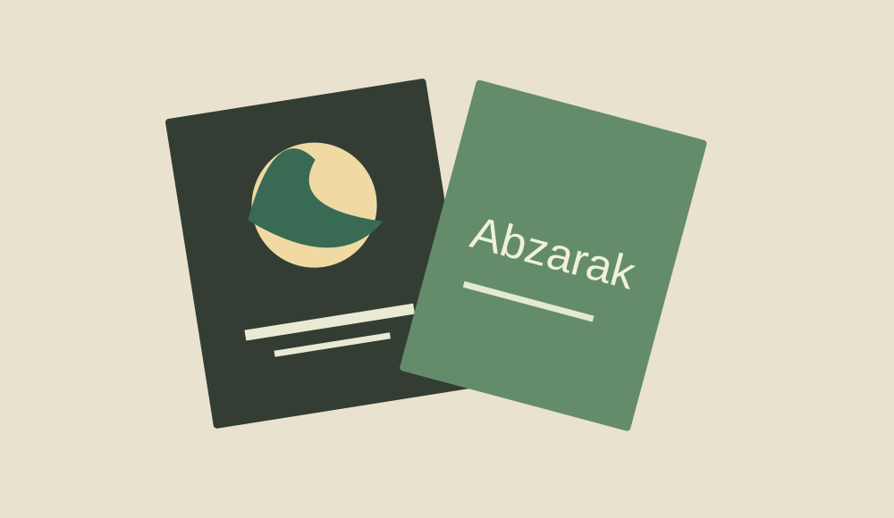
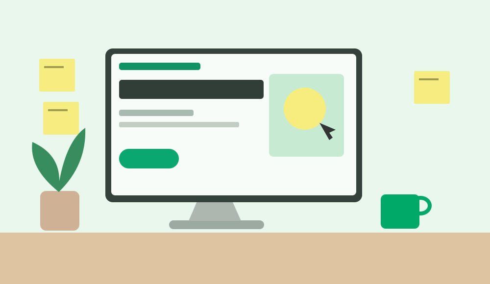
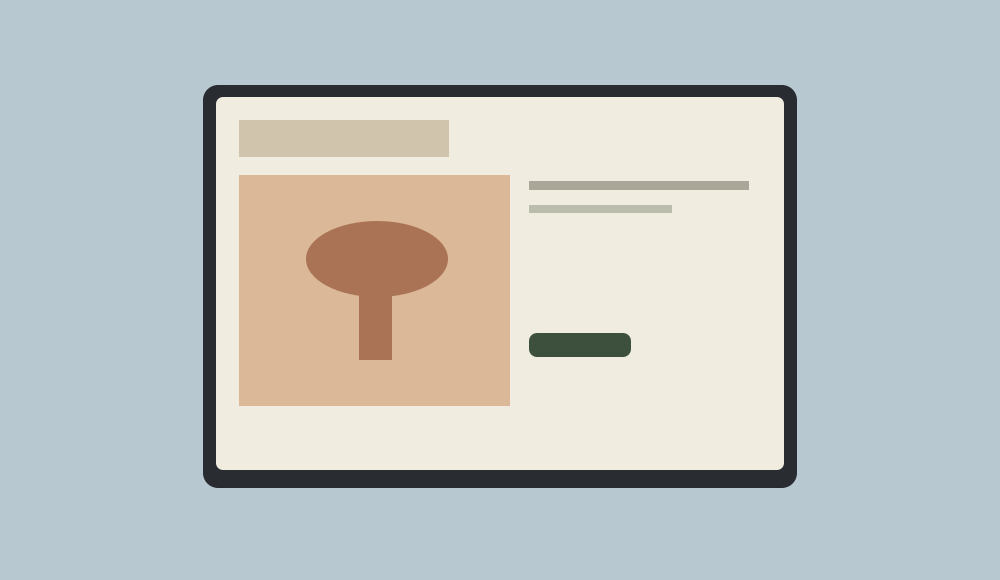
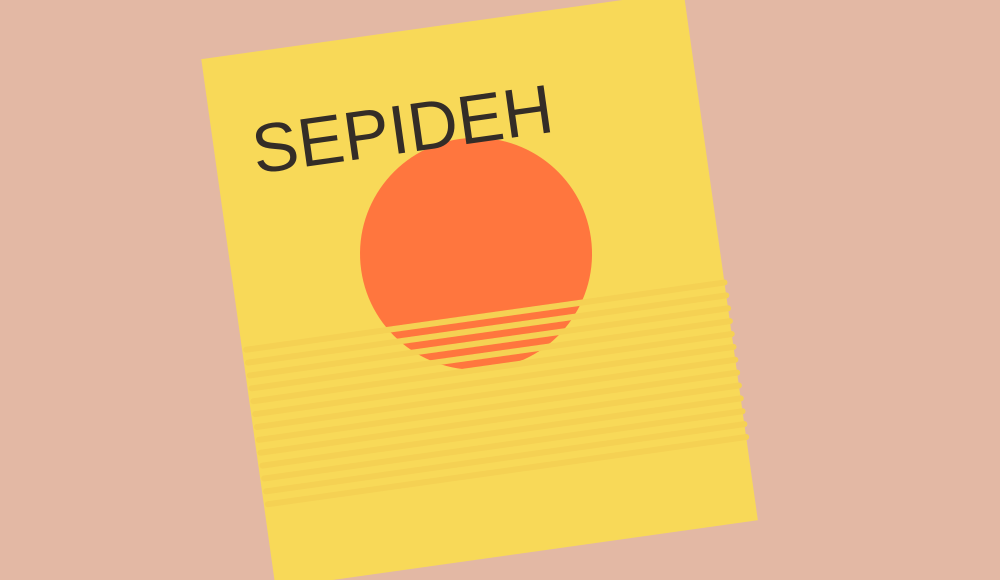

هویت بصری
ابزارک؛ هویت نو برای یک ابزار قدیمی
از نشانه و رنگ تا بستهبندی محصولات.

تخصص در یک تیم
هویت، وب و کمپین
بخشی از کارهای استودیو؛ از اولین اتود تا آخرین پیکسل.

از نشانه و رنگ تا بستهبندی محصولات.

فروشگاهی خلوت با تمرکز بر جنس و فرم هر محصول.

یک کمپین چندرسانهای برای معرفی مجموعهی بهار.
در یک جلسه دربارهی آدمها، بازار و هدف پروژه حرف میزنیم.
دو مسیر بصری را روی محتوای واقعی امتحان میکنیم.
سایت را سبک میسازیم و مدیریت آن را به تیمت یاد میدهیم.
از نخستین طرح با مداد تا روز انتشار، طراح، نویسنده و توسعهدهنده روی یک مسئله کار میکنند.
کشف مخاطب، معماری محتوا و تعیین مسیر پروژه.
ساخت سیستم تایپ، رنگ و اجزای رابط در ابعاد واقعی.
تبدیل طرح به صفحهای سریع، واکنشگرا و قابل ویرایش.
یک معرفی کوتاه از محصول و مخاطب، زمان تقریبی و محتوایی که آماده داری.
فرم پایین صفحه را تکمیل کن. یک فایل متنی از انتخاب و توضیحاتت دریافت میکنی.
این قالب نمایشی است. با تکمیل فرم، خلاصهی درخواستت را به صورت فایل متنی دریافت میکنی.
 انتخاب این قالب
انتخاب این قالب